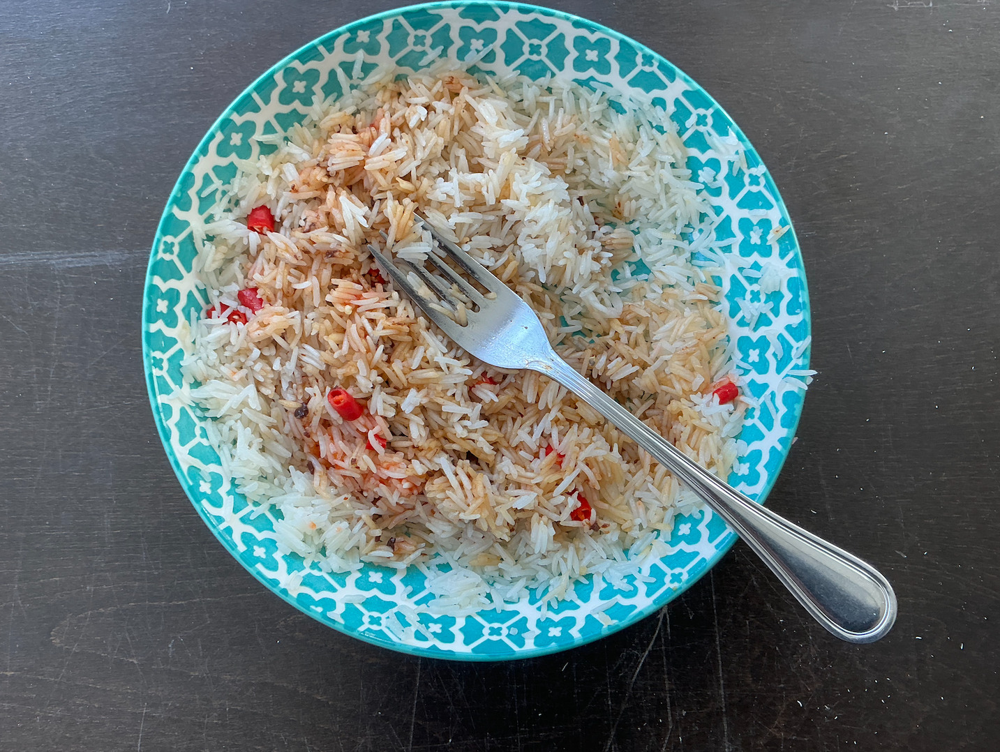

Rice Thing

What you can make in 30 minutes or less
I threw this together in 30 minutes.
Ingredients:
- Rice: Any type of rice will do.
- Thai chilies: Two peppers.
- Soy sauce: I used KIKKOMAN.
- Kinder's Cooking Sauce and Glaze: Japanese with Soy, Ginger, and Garlic
- Some weird thing with lemon, and lime that's brown: Make sure to look at the jar before use otherwise you will realize that it is expired by two months and eat anyway.
Directions:
- Cook your rice according to the bag.
- While rice is cooking cut up the two Thai chilies and place in bowl.
- Then scoop the rice in the bowl with the Thai chilies.
- Then add the soy sauce to the bowl, however much you want.
- Then add Kinder's Cooking Sauce and Glaze to the bowl.
- Then add some weird thing with lemon, and lime that's brown.
- Grab a fork and enjoy.
Links:
Home